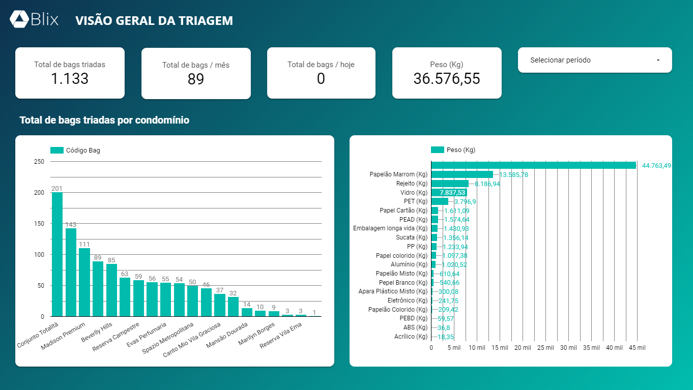
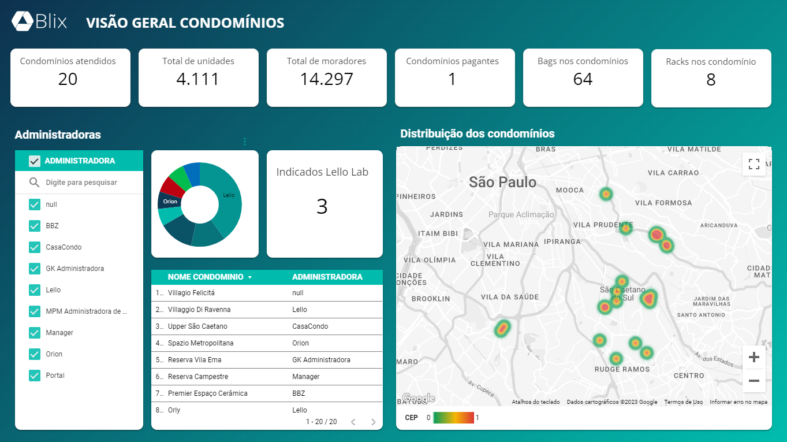
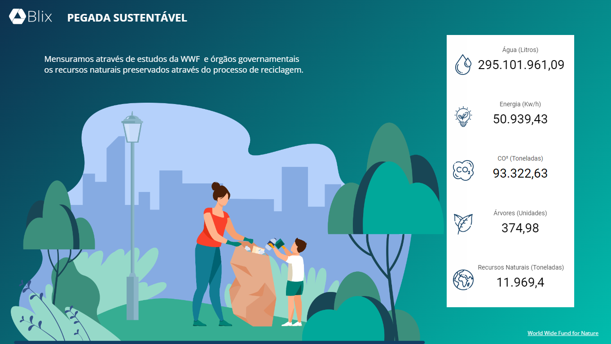
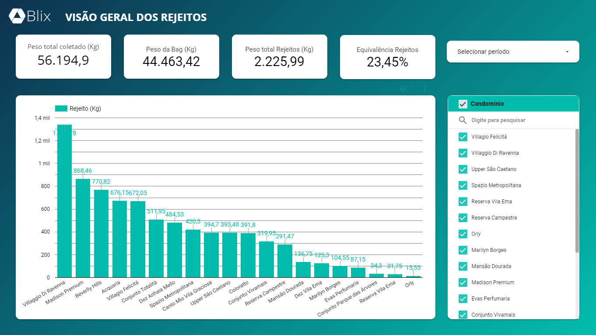
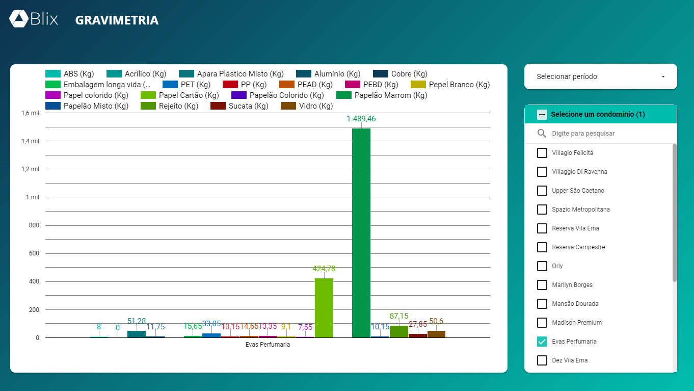
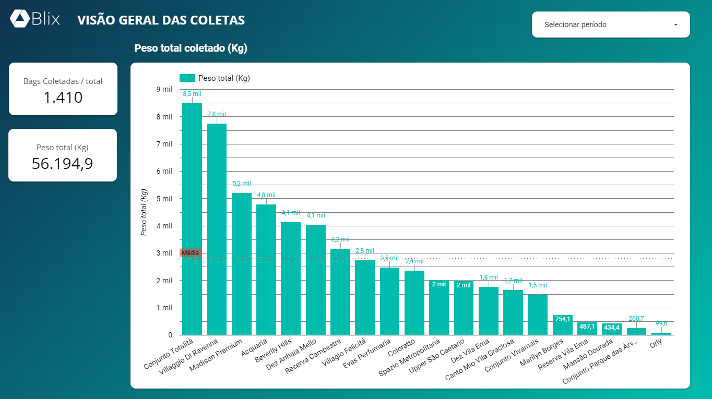
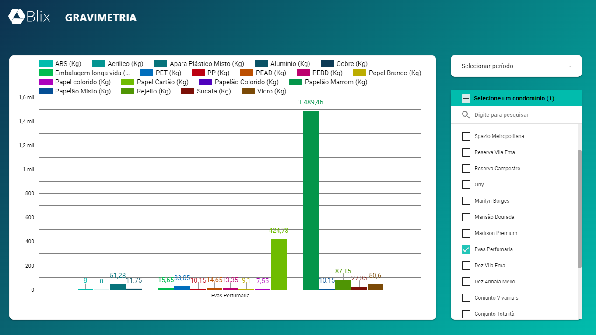

Desafio
Baixa adesão à reciclagem, pouca visibilidade sobre o destino dos resíduos e dificuldade para conectar moradores, condomínios, coletores e parceiros da cadeia.
Ecossistema digital para condomínios
Concepção e validação de uma plataforma de economia circular para rastrear resíduos recicláveis, conectar participantes da cadeia e recompensar usuários por meio de cashback.
Resumo executivo
O Blix nasceu com o objetivo de aumentar a participação das pessoas na reciclagem e melhorar a rastreabilidade dos resíduos ao longo da cadeia.
A proposta combinava tecnologia, economia circular e incentivos financeiros em uma plataforma capaz de registrar coletas, acompanhar a destinação dos materiais e recompensar os usuários por meio de cashback.
Como fundador e Product Lead, atuei na definição do modelo de negócio, Product Discovery, validação de hipóteses, desenvolvimento do MVP, aquisição dos primeiros clientes, relacionamento com parceiros e estratégia de entrada no mercado.
Baixa adesão à reciclagem, pouca visibilidade sobre o destino dos resíduos e dificuldade para conectar moradores, condomínios, coletores e parceiros da cadeia.
Plataforma digital para registrar e rastrear coletas de materiais recicláveis, organizar a operação e bonificar usuários por meio de cashback.
Aumento da participação na reciclagem, geração de renda para coletores, melhor rastreabilidade dos materiais e fortalecimento da economia circular.
Venture Building, Product Discovery, entrevistas, validação de hipóteses, modelagem de negócio, desenvolvimento de MVP e testes com clientes reais.
Oportunidade
A reciclagem envolve diferentes participantes, mas muitas interações ainda acontecem de forma informal e sem rastreabilidade. Moradores e condomínios nem sempre sabem como descartar corretamente seus resíduos. Coletores enfrentam dificuldades para organizar rotas e garantir recorrência. Empresas possuem pouca visibilidade sobre o retorno dos materiais à cadeia produtiva. O Blix foi concebido para conectar esses participantes em um ecossistema digital, transformando uma atividade fragmentada em uma jornada mais organizada, transparente e recompensadora.
Solicitam coletas, acompanham a destinação dos resíduos e recebem cashback pela participação.
Organizam a coleta seletiva, aumentam o engajamento dos moradores e acompanham resultados ambientais.
Recebem oportunidades de coleta, organizam atendimentos e ampliam sua geração de renda.
Participam do ecossistema, oferecem benefícios e acessam informações sobre os materiais coletados.
A proposta de valor do Blix foi estruturada sobre quatro pilares:

Metodologia
Análise dos desafios da reciclagem, da baixa adesão dos usuários e das dificuldades operacionais da cadeia.
Entrevistas e conversas com potenciais usuários, condomínios, coletores e parceiros para compreender necessidades e comportamentos.
Definição da proposta de valor, públicos, canais, fontes de receita, parceiros e estrutura operacional.
Seleção das funcionalidades essenciais para testar a proposta de valor com baixo investimento inicial.
Construção do MVP e realização de testes em um contexto real de operação.
Busca de clientes, parceiros comerciais, programas de aceleração e oportunidades de investimento.
MVP
O MVP foi desenvolvido com baixo custo para testar as principais hipóteses do negócio antes de investir em uma plataforma mais robusta.
A primeira versão permitiu validar:
O usuário ou condomínio solicita a coleta dos resíduos recicláveis.
O coletor realiza o atendimento e registra os materiais coletados.
As informações da coleta ficam associadas ao usuário, condomínio e operador responsável.
Os materiais seguem para os participantes responsáveis pela triagem e reciclagem.
O usuário recebe cashback ou benefícios associados à sua participação.
Big numbers
Clientes aderiram ao serviço ainda durante os testes realizados com o MVP.
Receita obtida durante a fase de testes e validação inicial do modelo.
Produto inicial desenvolvido para testar rapidamente as principais hipóteses.
Participação no processo de aceleração da Lello Lab.
A validação demonstrou que existia interesse pelo serviço e disposição de clientes em pagar por uma solução capaz de organizar a coleta de resíduos recicláveis.
A conquista de clientes durante os testes permitiu avaliar não apenas a experiência digital, mas também os desafios operacionais, comerciais e logísticos necessários para tornar o modelo escalável.
Os aprendizados mostraram a importância de equilibrar:

Venture Building
O desenvolvimento do Blix envolveu decisões que ultrapassaram a criação do produto digital.
Como Founder & Product Lead, atuei em diferentes dimensões da startup:
Discovery, definição do MVP, roadmap, interface e validação da experiência.
Modelo de receita, proposta de valor, estratégia comercial e relacionamento com clientes.
Estruturação da coleta, relacionamento com coletores e entendimento da logística.
Busca de parceiros comerciais, benefícios e oportunidades de integração ao ecossistema.
Preparação de apresentações e condução de reuniões com aceleradoras e potenciais investidores.
O Blix mostrou que uma boa ideia precisa funcionar em múltiplas dimensões para se transformar em um negócio sustentável.
Os principais aprendizados foram:




